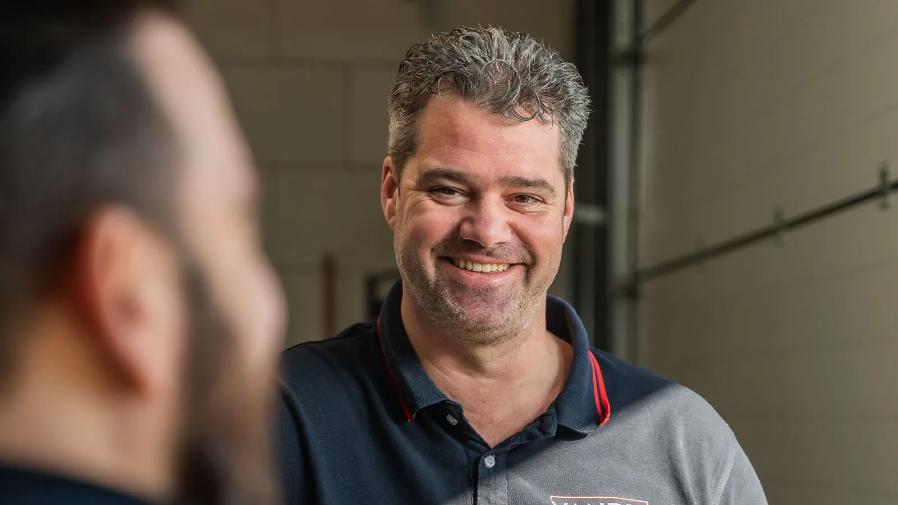

21 juni 2024 · 3 min leestijd

Soms begint een sterke samenwerking gewoon bij de buren. Inpieq, specialist in compacte funderingsmachines die door een opening van 3 bij 3 meter passen, is gevestigd op hetzelfde industrieterrein als Van Dis Solutions. Eigenaar Frank van Deursen zag ons team aan het werk met een schakelkast, was onder de indruk, en daarmee was het eerste contact gelegd.
De machines van Inpieq worden ingezet om houten funderingen van woningen te versterken of te vervangen door beton: cruciaal werk voor het leefbaar en bewoonbaar houden van oudere woningen.
Het eerste project was meteen een stevige test: de besturing moest gebouwd worden op basis van een verouderd elektrisch schema van een eerdere leverancier, inclusief onnauwkeurigheden. Ons team heeft het schema uitgeplozen, de fouten eruit gehaald en het project succesvol opgeleverd. Daarmee ging de deur open voor meer opdrachten.
Sinds dat eerste project hebben we in nauwe samenwerking met Inpieq een reeks verfijnde schakelkasten ontwikkeld. Door gezamenlijke verbeteringen in bedrading en componentkeuze werd het ontwerp compacter en de efficiëntie hoger, precies wat je wilt bij machines waar elke centimeter telt.
De lokale nabijheid maakt de lijnen kort: snel schakelen, snel leveren, samen doorontwikkelen. Zo laat deze samenwerking zien wat er gebeurt als technische expertise en strategisch partnerschap samenkomen.
Vrijblijvend adviesgesprek · Reactie binnen 24 uur